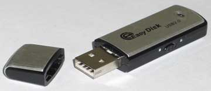
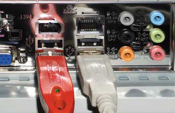
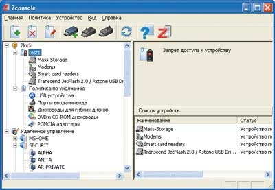

Сегодня у любой компании есть собственные коммерческие тайны. К ним относятся бухгалтерские документы, договоры с партнерами, планы развития, маркетинговые материалы и многое-многое другое. Вся эта информация обрабатывается и хранится в электронном виде, следовательно, ее защите должно уделяться очень большое внимание. Ведь если такие документы попадут в руки конкурентов, последние получат перед компанией огромное преимущество. Это понимают руководители практически всех фирм, и они как могут заботятся о сохранности конфиденциальных данных. Для этого используется антивирусное ПО, межсетевые экраны, системы обнаружения атак, криптография и т. д. Все это позволяет надежно защитить секреты компании практически от любых внешних угроз. Правда, при этом часто забывают еще об одном очень опасном канале утечки секретных данных. Речь идет, конечно же, о людях, работающих в компании и имеющих доступ к документам для исполнения своих служебных обязанностей.
Многие руководители считают эту проблему надуманной. Они не понимают, зачем их сотрудникам копировать и уносить домой рабочие документы. Кроме того, есть здесь и психологический момент: неприятно сомневаться в людях, которых сам выбрал. Однако нужно быть реалистами. Патриотов, фанатично преданных своему работодателю, сегодня очень мало. Подавляющее большинство людей относительно легко согласится сменить работу, если на новой им предложат лучшие условия, большую зарплату или хорошие перспективы. Довольно часто бывает, что сотрудник (особенно если это хороший специалист с большим опытом) переходит к конкуренту своего работодателя. И при этом он вполне может в качестве "подарка" принести своему новому руководству вынесенные со старого места работы документы. В этом случае владелец информации даже не узнает об ее утечке, и тем опаснее станут украденные данные в руках конкурентов.
В утечках конфиденциальной информации далеко не всегда виноват злой умысел. Еще одна очень распространенная их причина - простая неосторожность сотрудников. Так, человек, не успевая выполнить все свои обязанности в рабочее время, может скопировать документы для того, чтобы закончить работу дома. Но тут возникает риск утери носителя с информацией или похищения документов с домашнего компьютера сотрудника, который наверняка защищен гораздо слабее корпоративного ПК. Таким образом, благие намерения сотрудника компании могут нанести ей огромный ущерб - причем руководство опять-таки об этом ничего не узнает.
Только цифры
Ежегодно американская организация Computer Security Institute (CSI) совместно с Федеральным бюро расследований проводит анализ "компьютерной" преступности в корпоративном секторе. Для этого анонимно опрашивается руководство определенного числа разных по величине компаний. Полученные данные обрабатываются и анализируются, давая некий статистический срез, который позволяет наглядно представить себе общую ситуацию с правонарушениями в сфере высоких технологий.
Последнее исследование было проведено в январе этого года. Было опрошено руководство 639 различных по величине компаний (с числом сотрудников от 1 до 50 000 человек), работающих в самых разных областях (промышленные предприятия, банки, государственные учреждения, торговые фирмы, ИТ-компании и т. д.). Выяснилось, что общие потери респондентов от всевозможных ИТ-угроз за весь 2005 г. составили сумму более 130 млн долл., т. е. в среднем немного больше 200 тыс. долл. на одну фирму - сумма достаточно существенная. Впрочем, справедливости ради отметим, что по сравнению с 2004 г. она уменьшилась более чем в 2,5 раза! Так что, в общем, можно сделать вывод, что информационная безопасность компаний значительно усилилась.
Наибольшие убытки компаниям наносят вирусы. На них приходится 42 787 тыс. долларов ущерба (около 33% от общих "ИТ-убытков"). Второе и третье места практически делят между собой несанкционированный доступ к информации (31 233 тыс. долл., или 24%) и утечка конфиденциальных данных (30 933 тыс. долл., 23,8%). Все остальные ИТ-угрозы довольно сильно отстают от "лидеров". Так, четвертое место по размеру убытков занимают атаки типа "отказ в обслуживании" (DoS-атаки). В 2005 г. они нанесли респондентам ущерб в 7310 тыс. долларов, что составляет "всего" 5,6% от общего.
Очень показателен следующий факт. Как мы уже говорили, общие убытки компаний от ИТ-угроз упали в 2,5 раза. В то же время ущерб, нанесенный утечками конфиденциальной информации, вырос более чем вдвое, а доля убытков от утечек конфиденциальных данных увеличилась с 9,8 до 23,8%! Причем здесь учитываются только известные случаи, а о скольких утечках коммерческих тайн их владельцы так и не узнали? Таким образом, вполне возможно, что на самом деле сумма убытков от этой ИТ-угрозы гораздо выше. Естественно, ситуация в области корпоративной информационной безопасности не могла измениться так сильно сама по себе, без веских на то причин.
Утечки информации. Как?
Для того чтобы разобраться в причинах столь резкого увеличения объемов воровства конфиденциальной информации, необходимо понять, как оно происходит. Собственно говоря, все очень просто. В подавляющем большинстве случаев сотрудник копирует документы, с которыми он в данный момент работает, на любой мобильный носитель информации. До недавнего времени основным инструментом для этого были записываемые компакт-диски. Однако с ними связан целый ряд сложностей. Во-первых, объем информации, помещающийся на "болванке", относительно мал. Безусловно, на компакт-диск войдет немало текстовых документов, но базы данных, мультимедийная информация и прочие объемные данные на него не поместятся. Во-вторых, компакт-диск - вещь не миниатюрная, и воспользоваться им незаметно для других сотрудников получится далеко не у каждого. Наконец, приводы CD-R и DVD-R очень легко отключить даже стандартными средствами BIOS и операционной системы. Примерно то же самое можно сказать практически обо всех остальных носителях информации, например, о ZIP-дисководах.
Гораздо более удобное средство "выноса" конфиденциальных данных с компьютера - мобильные устройства памяти. Особенно это верно в отношении тех модулей, которые могут подключаться к USB-порту компьютера. Возьмем, например, устройства флэш-памяти. Их объем может достигать 4 Гбайт при цене в 300-350 долл., для работы с ними не нужны дополнительные драйверы, да и скорость обмена информацией с ПК достаточно велика. Это означает, что любой пользователь может легко подключить к своей рабочей станции собственное устройство и скопировать на него всю служебную информацию, к которой он имеет доступ. Кроме того, нужно учитывать, что физические размеры устройств на базе флэш-памяти очень невелики, и человек может не только принести их в офис, но и работать с ними незаметно для других сотрудников.
|  | С помощью этого маленького накопителя инсайдер может унести огромное количество конфиденциальной информации.
|
Нельзя также забывать, что сегодня многие цифровые устройства имеют встроенную память для хранения данных, и их легко подключить к компьютеру с помощью одного универсального USB-кабеля. Так что карманные компьютеры, сотовые телефоны, mp3-плееры и цифровые фотоаппараты также могут послужить инсайдерам для переноса конфиденциальной информации, тем более что среди них встречаются устройства со встроенными жесткими дисками. Например, существуют модели mp3-плеера iPod с винчестером объемом до 60 Гбайт, имеющие размеры чуть больше пачки сигарет. Более того, совсем недавно анонсирована специальная утилита Slurp, разработанная экспертом в области компьютерной безопасности Эйбом Ашером для плеера iPod, которая автоматически проводит в корпоративной сети поиск документов в форматах .doc, .xls, .ppt, .htm, .xml, .txt и т. д. Буквально за несколько минут программа может собрать и скопировать на плеер до 100 Мбайт информации. Существуют модификации программы и для других устройств, в том числе работающих через беспроводные интерфейсы Wi-Fi и Bluetooth. Таким образом, уже появились варианты не только хищения информации, но и автоматизации этого процесса.
Утечки информации. Почему?
Теперь, когда мы разобрались с тем, как происходят утечки коммерческой информации, одна из самых главных причин их распространения становится очевидной. Как выяснилось, самое удобное средство для воровства данных - различные цифровые устройства и флэш-память, а их массовое распространение началось как раз год-два назад. Естественно, это не могло не сказаться на информационной безопасности компаний.
Впрочем, причина эта не единственная. Если еще раз обратиться к совместному исследованию CSI и ФБР, точнее, к той его части, где говорится об используемых компаниями средствах защиты от ИТ-угроз, можно увидеть следующее. Практически на всех корпоративных компьютерах работает антивирусное ПО и сетевые экраны. Дополнительно к ним в сетях почти у 3/4 всех респондентов установлены системы обнаружения атак. Правда, несмотря на это, вирусы все равно наносят очень большой ущерб, и для того, чтобы его снизить, необходимы немалые вложения. С проблемой несанкционированного доступа к конфиденциальной информации дела обстоят иначе. В 42% компаний-респондентов для авторизации пользователей используются токены и смарт-карты. Еще 15% фирм применяет биометрическую аутентификацию. Таким образом, действительно надежные средства контроля доступа используются в 57% компаний. И именно на оставшиеся 43% и приходится большая часть убытков от этой ИТ-угрозы.
Ну а что же с инсайдерами? Оказывается, в проведенном исследовании респондентов даже не спрашивали о наличии специальной защиты от них. Дело в том, что такие системы сегодня не используются практически нигде! Этот факт совместно с массовым распространением мобильных носителей информации и стал основной причиной резкого увеличения убытков, наносимых воровством конфиденциальной информации. Руководители компаний просто-напросто не успели отреагировать на столь быстрое изменение ситуации и принять соответствующие меры.
Подчеркнем, что исследование проводилось исключительно среди американских компаний, а для нашей страны цифры будут совершенно иные. Впрочем, это и не так уж важно. Главное, что в российских компаниях тоже нет защиты от инсайдеров, зато цифровые устройства и флэш-память у сотрудников - совсем не редкость. Иными словами, проблема утечек конфиденциальной информации в нашей стране также весьма и весьма актуальна.
Только факты
В нашей стране - впрочем, как и во многих других - преступления в сфере высоких технологий обладают огромной латентностью. Иначе говоря, в большинстве случаев их скрывают. Обычно это делается для того, чтобы не нанести ущерба репутации фирмы. Действительно, кто же захочет иметь дело с компанией, информация о партнерах которой регулярно становится достоянием общественности или конкурентов? Кроме того, как мы уже говорили, утечки конфиденциальных данных страшны тем, что их владелец может и не знать о них. Так, в 2004 г. два крупнейших оператора сотовой связи ("Вымпелком" и "Мобильные ТелеСистемы") несколько раз практически одновременно выступили с очень похожими инициативами: отмена сроков действия платежа, введение новых тарифов, соглашение со Сбербанком и т. д. Журналисты в то время списали это на случай и решили, что "идеи просто витали в воздухе". Правда, руководство "Вымпелкома" уверено в другом. По их мнению, внутреннее расследование доказало, что один из сотрудников маркетингового отдела компании рассказывал о ближайших планах своему приятелю, который публиковал эту информацию на крупном сайте, посвященном сотовой связи. Так что вполне возможно, что именно утечка информации не позволила оператору опередить конкурента с инициативой.
Другой случай утечки критически важной информации из крупной компании произошел на Украине. Ее виновником оказался бывший технический директор пивоваренной компании "Оболонь", который, по утверждению руководства, продавал различные коммерческие тайны прямому конкуренту - фирме "Сармат". Общий ущерб, нанесенный инсайдером своему работодателю, оценивается более чем в 5 млн долл.
Впрочем, не только крупные компании страдают от утечек конфиденциальной информации. Так, из одной компании, занимающейся оптовой продажей табачных изделий и являющейся дистрибьютором крупного иностранного производителя, уволился финансовый аналитик. И практически сразу после этого (а может быть, до этого?) его пригласили на более высокую должность в российский офис другой табачной корпорации. А поскольку на предыдущем рабочем месте человек имел полный доступ к подробной базе клиентов, то он смог использовать эту информацию к пользе своего нового работодателя.
Надо признать, что в России стало нормой, когда человек, приходящий на работу в новую компанию, приносит туда много информации от предыдущего работодателя. Особенно опасны в этом плане оказываются сотрудники отделов, занимающихся маркетингом и работой с клиентами. Здесь сказывается то, что, с одной стороны, эти люди имеют доступ к весьма важной информации, а с другой - они остаются рядовыми сотрудниками, которых работодатель не стремится дополнительно мотивировать.
Закрываем порты
Наиболее очевидное решение для защиты от инсайдеров - запрет использования в офисе любых электронных устройств, которые могут выступать в качестве носителей информации. Впрочем, это практически нереально - ведь тогда придется запретить все, вплоть до сотовых телефонов. Причем руководству мало принять такое решение, необходимо как-то обеспечить его исполнение. А сделать это непросто, поскольку современные носители данных очень малы, их легко спрятать и использовать незаметно.
Поэтому сегодня гораздо большее распространение получил другой способ защиты от инсайдеров - физическое отключение USB-портов на всех компьютерах. Этот вариант, безусловно, самый дешевый, однако он не выдерживает абсолютно никакой критики. Во-первых, для воровства конфиденциальной информации годятся не только USB-накопители, ведь есть еще приводы CD- и DVD-R/RW, ZIP-дисководы, различные ридеры, телефоны и КПК, которые могут подключаться через COM-порт, беспроводные способы передачи данных (IrDA, Bluetooth) и т. д. Во-вторых, полностью отключать USB-порты зачастую нельзя, все-таки большая часть современной периферии использует для соединения с ПК именно этот интерфейс. Что же делать с такими мышками и клавиатурами, принтерами и сканерами?
|  | USB-порты - самый распространенный интерфейс для подключения периферии, так что совсем отключить их нельзя.
|
Интересный подход применили в одном банке. На всех компьютерах были отключены USB-порты, кроме одного-двух для подключения необходимой периферии. Сами системные блоки были опечатаны. А для того, чтобы сотрудники не могли временно отсоединить принтер и использовать освободившийся порт для своих целей, все соединения были залиты эпоксидной смолой. Таким образом, периферийные устройства были "намертво" соединены с компьютерами, и разорвать эту связку можно было, только срезав сам кабель. В итоге получились своеобразные "комплекты", которые даже ремонтировать приходилось вместе. Как говорится, это было бы смешно, если бы не было так грустно.
Кроме того, нельзя забывать еще об одном очень важном моменте. Сегодня для того, чтобы защититься от несанкционированного доступа к данным (эта ИТ-угроза тоже очень серьезна), желательно использовать аппаратные средства аутентификации сотрудников компании. Один из самых удобных и приемлемых по соотношению цена/качество способов аутентификации - токены. Они представляют собой USB-ключи с надежно защищенной памятью, которые могут в любой момент подключаться к компьютеру и отключаться от него. Естественно, их использование при закрытии USB-портов станет невозможным.
Итак, блокировка USB-портов стандартными средствами - далеко не самый удачный способ борьбы с инсайдерами. Компаниям нужны средства защиты, позволяющие динамически закрывать и открывать доступ к любым носителям, которые могут использоваться для выноса информации с компьютера. При этом в них должно быть учтено множество нюансов, например, разделение прав различных пользователей, разрешение на работу отдельных устройств и многое другое.
А что же закон?
29 июня 2004 г. был принят Федеральный закон Российской Федерации, получивший название "О коммерческой тайне". Он довольно подробно описывает само понятие коммерческой тайны, а также те данные, которые могут быть отнесены к этому разряду. Кроме того, данный нормативный акт позволяет наказывать сотрудников "в случае умышленного или неосторожного разглашения этой информации" и даже требовать от них полной компенсации всего нанесенного компании ущерба. Казалось бы, этот закон полностью решает проблему инсайдеров. Но на самом деле это не так.
Чтобы закон начал охранять какую-то информацию, необходимо выполнить целый ряд действий. Во-первых, руководство фирмы должно составить перечень данных, являющихся коммерческой тайной, и каждый сотрудник, который будет иметь к ним доступ, обязательно должен с ним ознакомиться (естественно, под роспись). Во-вторых, со всеми сотрудниками должны быть проведены собеседования, в ходе которых им объяснят суть режима коммерческой тайны и ответственность за его нарушение (тоже под роспись). В-третьих, компания должна установить порядок обращения с конфиденциальной информацией и обеспечить учет лиц, получающих к ней доступ. В-четвертых, в договор между работником и работодателем должен быть внесен дополнительный раздел, касающийся работы с коммерческой тайной. И наконец, на все материальные носители, содержащие конфиденциальные данные, необходимо нанести специальный гриф. Только после выполнения всех перечисленных мер коммерческая информация будет охраняться законом.
Впрочем, перевод информации в разряд коммерческой тайны еще ничего не гарантирует. Допустим, какой-то сотрудник стал причиной утечки важных конфиденциальных документов, а служба безопасности компании вычислила его. В соответствии с законом руководство имеет право уволить проштрафившегося работника, а также подать на него в суд с требованием полной компенсации всех понесенных убытков. Однако для начала необходимо полностью доказать вину инсайдера. А как это сделать? Стандартные средства операционной системы тут не помогут. Для доказательства вины необходимы специальные инструменты, способные зафиксировать действия злоумышленника, однозначно направленные на воровство информации. Так что доказать вину инсайдера очень и очень не просто. Если говорить откровенно, то за полтора года действия закона "О коммерческой тайне" ни один судебный процесс пока еще не закончился успехом владельца конфиденциальной информации.
Выход есть!
Итак, утечки конфиденциальной информации представляют собой одну из самых серьезных ИТ-угроз. Но неужели защиты от них не существует? Конечно же, это не так. Сегодня разработано специальное ПО, достаточно надежно защищающее от инсайдеров. Принцип его работы заключается в динамическом блокировании всех портов и устройств, через которые злоумышленник может "вынести" данные с компьютера. Для примера рассмотрим программу Zlock, разработанную российской компанией SecurIT (http://www.securit.ru). Этот продукт позволяет полностью контролировать любые устройства, подключающиеся к компьютеру через интерфейс USB, флоппи- и ZIP-дисководы, приводы CD- и DVD-ROM, адаптеры Wi-Fi и Bluetooth, контроллеры IrDA, порты COM, LPT, PCMCIA, IEEE 1394 (FireWire) и т. д.
|  | Zlock - программное решение для защиты от инсайдеров.
|
При использовании специального ПО система защиты информации от инсайдеров приобретает огромную гибкость. Устанавливать права доступа можно как отдельно для каждого пользователя, так и для целых групп. Можно разрешать или запрещать использование устройств по их типу, производителю, используемому драйверу, серийному номеру и многим другим параметрам. Такой подход позволяет создавать универсальные политики. Например, ответственный за информационную безопасность сотрудник может запретить использование любых USB-устройств, кроме мышей, клавиатур, принтеров и токенов определенной модели одного производителя (для нормального функционирования системы аутентификации пользователей). Дополнительно можно ввести исключения для доверенных работников и руководства, позволив им пользоваться устройствами флэш-памяти, но только своими персональными (определяются по идентификационным номерам).
Еще одна очень важная возможность рассматриваемого класса программ - ведение журналов (логов) использования различных носителей информации. Эта функция позволяет службе безопасности при появлении подозрений проверить сотрудников компании и выявить среди них инсайдера. Кроме того, вполне возможно, что данные из журнала программы контроля в будущем будут использоваться в суде для доказательства вины злоумышленника.
К сожалению, программ, предназначенных для динамического блокирования различных портов, сегодня на рынке очень мало. Кроме уже упомянутого Zlock, можно назвать еще один-два таких продукта, причем производства западных компаний. Стоимость этих утилит лежит примерно в одном ценовом диапазоне, так что при выборе подходящего продукта необходимо ориентироваться на его функциональность и, не в последнюю очередь, на удобство использования. Дело в том, что настраивать политики доступа должен либо сам руководитель компании, либо офицер безопасности. И далеко не всегда эти лица обладают достаточными знаниями в компьютерной области, чтобы разобраться в англоязычном интерфейсе. В таком случае они будут вынуждены позвать на помощь технического специалиста - а это уже потенциальная угроза. Поэтому простой русскоязычный интерфейс - большой плюс для системы защиты информации.
Итак, подведем итоги. Утечки коммерческой информации - это действительно очень серьезная проблема. И сегодня есть средства, способные защитить от них. Естественно, их внедрение требует определенных затрат, но нужно понимать, что эти затраты гораздо меньше, нежели убытки, которые может понести (а может быть, уже несет?) компания.